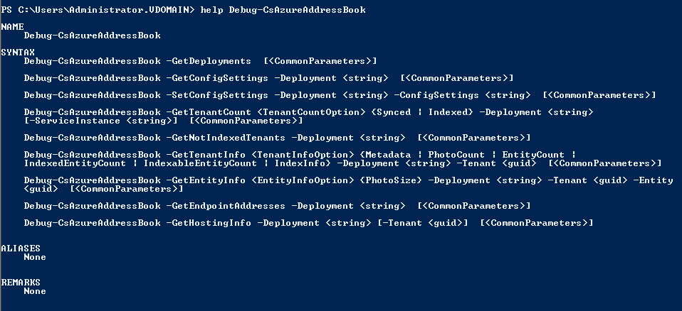
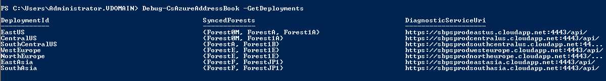
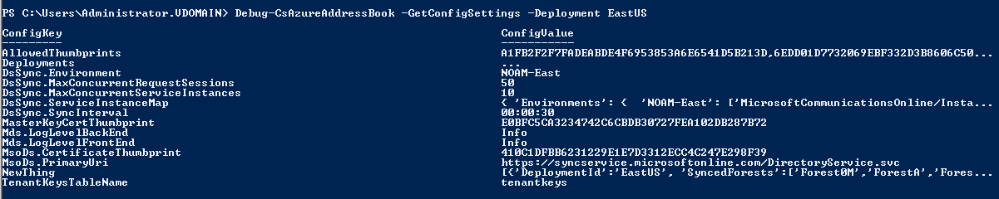
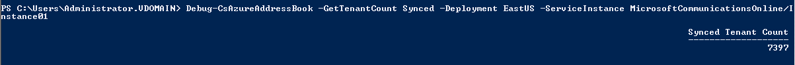
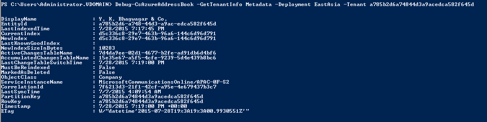
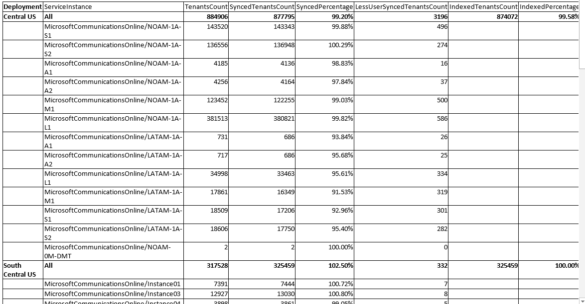
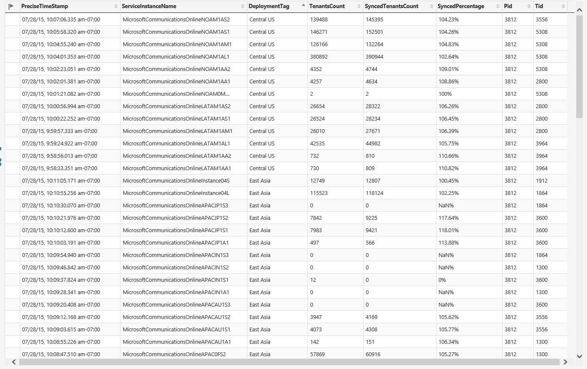
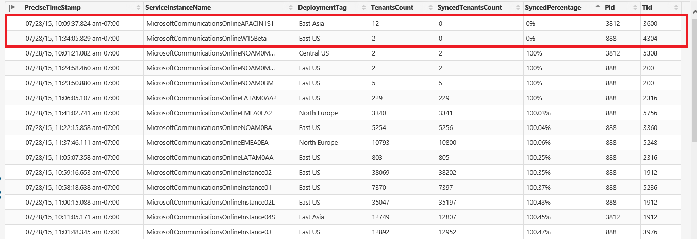
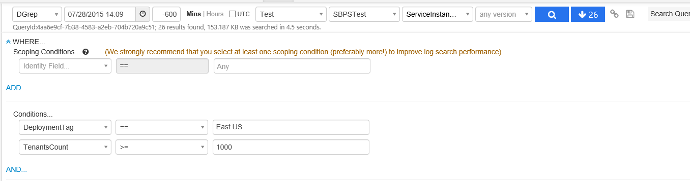
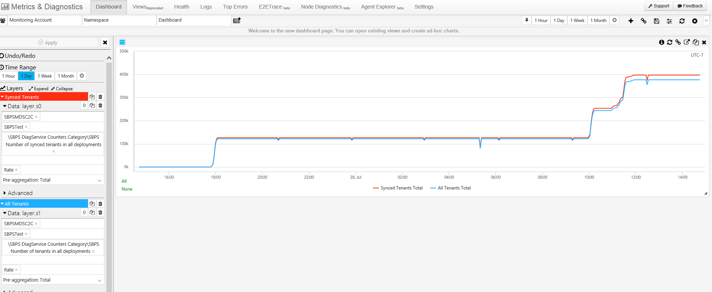

Skype for Business People Search
Diagnostic Toolkit
Microsoft Skype intern presentation by Anne LoVerso
Agenda
The People Search team manages the Address Book Service that allows users to search for contacts within their organization in Skype for Business
My Role
- The team is moving its data to Azure storage, and needs to keep tabs on the status of all tenants as they get synced between the data sources.
- My toolkit provides ways to see the status of all seven worldwide datacenters and how many tenants are synced and/or indexed at each
- I first wrote a Powershell cmdlet to display address book information
- The second half of my project is creating a web portal that will display graphs and tables for the syncing status of each service instance
Powershell cmdlet
The Debug-CsAzureAddressBook cmdlet has 9 functions, each one querying a different informational component of a deployment
Powershell Cmdlet
The -GetDeployments function takes no arguments and lists the seven possible deployments you could gather information on
Powershell cmdlet
  From there, users can request information specific to a deployment, or to tenants within a deployment
Online Portal - Design
- See the syncing status of a specific tenant
- View missing tenants or service instances, but filter based on tenant size
- Top N missing or partial tenants/service instances
Previously, the team ran a program by hand to generate static tables of data:
Now, my cloud-based solution displays the table using the MDS resource already used by the team for other projects
It allows sorting, so the team can see the team can see the most problematic tenants immediately
Also allows filtering so team can quickly navigate to data they need to see
The charts will track important data points across the last few days
This graph shows how the total tenant count is increasing as it syncs the data into MDS. As more data gets added every day, these trackers and graphs will show more useful day-to-day data
Now you can refer to it by just a small chunk of the checksum

...but not too small!

Check for Updates
An option for sysadmins to see the package diff between versions before downloading the newest upgrade
--check-only option

Allows a user to see whether a new version is available. This prevents having to run and upgrade, download the newest deployment, and check if it is different from the current one.
--check-diff option

Allows a user to see the package-level diff in a new version. "!" indicates the old package, and "=" indicates the new package.
Naming Deployments
Assign names to deployments for easier human parsing, and allow custom naming.

Default names are chosen randomly in the form <color>_<headgear> and show in verbose status output
Now have three ways to refer to a given deployment:

1 - by refspec

2 - by a partial checksum

3 - by name
ostree name command: features

1 - looking up a commit name, by any of the aforementioned ways to reference a deployment
ostree name command: features

2 - changing to custom names to keep mental track of deployment features

...but only a unique custom name
ostree name command: features

3 - removing a custom name to set it back to the default value